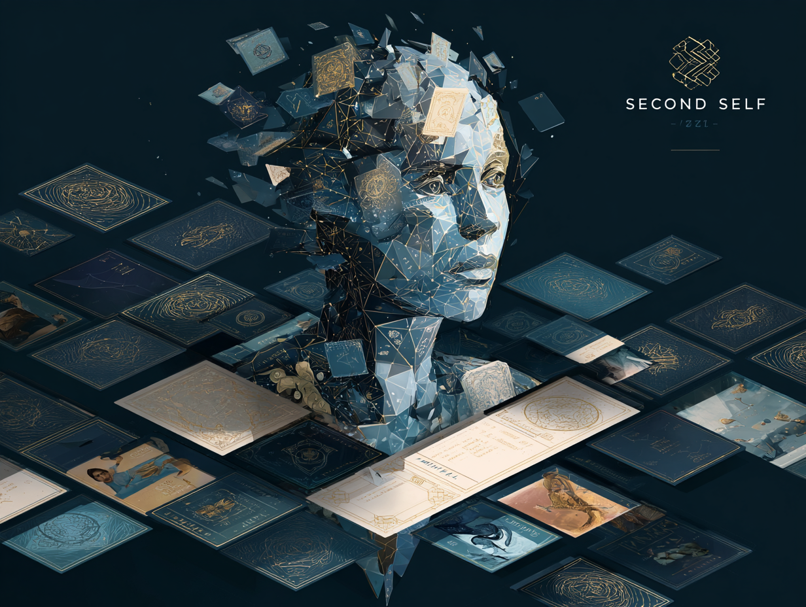

Descend

The Three Realms
I
Self / Systems / Subject Formation
The invisible architectures that shape who we become.
II
Literature / Self / Performance
Where sincerity meets spectacle and identity becomes role.
III
Aesthetics / Interpretation / Form
The hidden structure of beauty made experientially legible.
Works

Realm I
Second Self
An online philosophical card game. Design a society — its institutions, algorithms, memory systems — and confront the kind of human subject it produces.
Flagship

Realm I
Narrative Drift
A simulation of how ordinary platform choices gradually reshape the self.
Realm II
Mishima Atlas
A navigable conceptual map of Mishima's universe across literature, beauty, politics, and death.
Realm I · II
Existential Wager
A simulation of what happens when a principle is lived so faithfully that it becomes theatre.
Realm III
LitPulse
An interface for seeing the emotional motion, motifs, and structural pulse of literature.
Realm III
Scoreless
A music interface for feeling form, tension, and movement without reading notation.

Realm II
Theatre of Authenticity
An exploration of authenticity, performance, beauty, death, and transcendence — across Mishima, Kierkegaard, Nietzsche, Sartre, and Bataille.
Realm I
Underground
A Dostoevskian game of anti-rationality. In a society optimized beyond friction, only self-destructive, irrational, anti-systemic choices preserve the feeling of being a subject. A rebellion against “2+2=4.”
Realm I · II
The Possessed
A network game of ideological contagion, revolution, and nihilism. Ideas do not move people — emptiness, desire, power, and mimicry explode through ideas as their medium.
Realm I · II
Ivan / Alyosha / Kirillov
A personality model comparison app. Dostoevskian human types compared across axes of faith, rebellion, ethics, transcendence, suicide, and responsibility.
Realm I
Becoming
A Hegelian simulation. How recognition, alienation, institutions, history, and freedom develop — and at what point the self reconciles with society, or refuses to.
Realm I · II
The Last Man
A Nietzschean society-design game. Balance comfort, stability, equality, creation, danger, and self-overcoming. Too much stability breeds the Last Man; too much risk shatters everything.
Realm I · III
Archive of Being
A Heideggerian meditation on technology and disclosure. When the world appears only as resource, the subject itself loses the capacity to appear. Dwelling, Gestell, and the question of Being.
Realm I · II · III
After Reason
A series drawing from Adorno, Benjamin, Arendt, and Habermas. Memory, catastrophe, the public sphere, authority, mechanical reproduction, discourse, and historical experience.
Realm I · III
Memory Regimes
Connecting Proust, Benjamin, Stiegler, Dostoevsky, and AI archive culture — examining how what is remembered and what is forgotten reshapes the subject.
Realm I · II
Counterpublics
Intersecting Arendt, Habermas, Fraser, Dostoevsky’s underground man, and the anonymity of modern social media — mapping the counter-public sphere.
About MYTHERA
An interpretive studio for interactive philosophical and cultural works.
Mythera transforms hidden structures of meaning — selfhood, memory, interpretation, performance, and subject formation — into interfaces, simulations, atlases, and digital experiences.

Built by Risa Koyanagi — a creator of interpretive worlds working where philosophy, aesthetics, systems, and cultural form meet. Cambridge Future Scholar with design work exhibited internationally.
 risakoyanagi.com →
risakoyanagi.com →